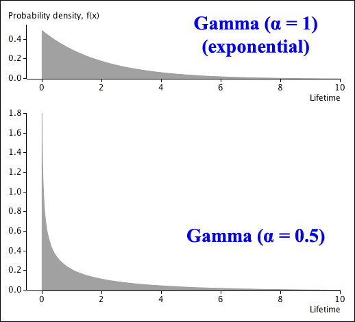

We now describe a family of distributions that can be used to model "quantity" variables — ones that can only take positive values. The Gamma distribution is a generalisation of the \(\ErlangDistn(k,\; \lambda)\) distribution that allows non-integer values for the parameter \(k\). By convention, Erlang parameters \(k\) and \(\lambda\) are denoted by the symbols \(\alpha\) and \(\beta\) in Gamma distributions.
Definition
A random variable \(X\) is said to have a Gamma distribution with parameters \(\alpha \gt 0\) and \(\beta \gt 0\),
\[ X \;\;\sim\;\; \GammaDistn(\alpha,\; \beta) \]if its probability density function is
\[ f(x) \;\;=\;\; \begin{cases} \dfrac {\beta^\alpha }{\Gamma(\alpha)} x^{\alpha - 1} e^{-x\beta}& \quad\text{if }x \gt 0 \\ 0 & \quad\text{otherwise} \end{cases} \]The exponential distribution is a special case of the gamma distribution when \(\alpha = 1\). The distribution becomes increasingly skew as \(\alpha\) decreases from this value. The two Gamma distributions below both have mean \(E[X] = 2\).

When \(\alpha\) increases, the mode of the distribution (where its density is highest) increases from zero and the distribution's shape becomes more symmetric. The two Gamma distributions below again both have \(E[X] = 2\).
Comparison of Gamma and Weibull distributions
The Gamma and Weibull distributions are both generalisations of the exponential distribution — exponential distributions are special cases when \(\alpha = 1\) and both can be used as models for lifetime data. The main differences between them arise in the tails of the distributions, especially when \(\alpha\) is positive.
| \(\WeibullDistn(\alpha,\; \lambda)\): | \(f(x) \propto x^{\alpha - 1} e^{-(\lambda x)^{\alpha}}\) |
| \(\GammaDistn(\alpha,\; \beta)\): | \(f(x) \propto x^{\alpha - 1} e^{-\beta x}\) |
When \(\alpha \gt 1\), the Weibull distribution's upper tail decreases much faster than the Gamma distribution's upper tail, so the Gamma distribution has a longer upper tail (and is more skew).
In many applications, the Gamma distribution's longer tail matches what is seen (or expected) in sample data.